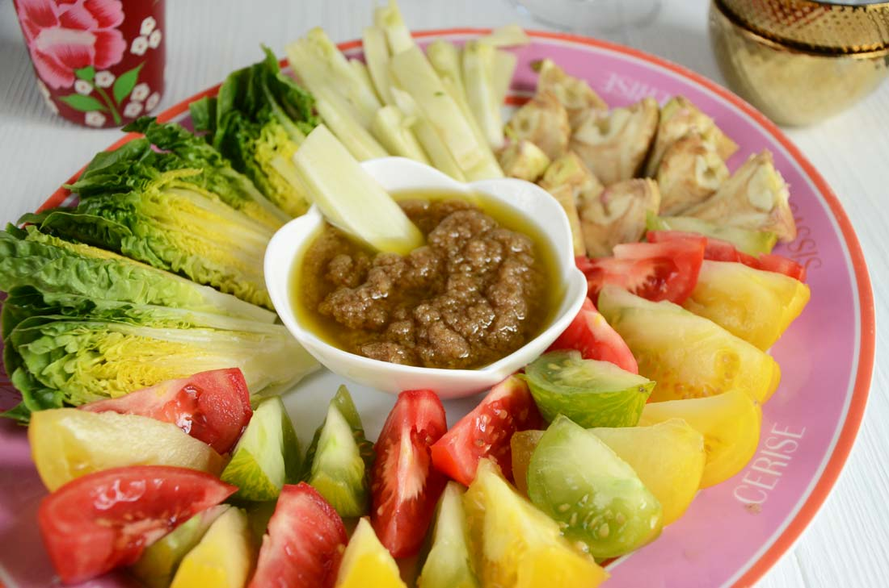
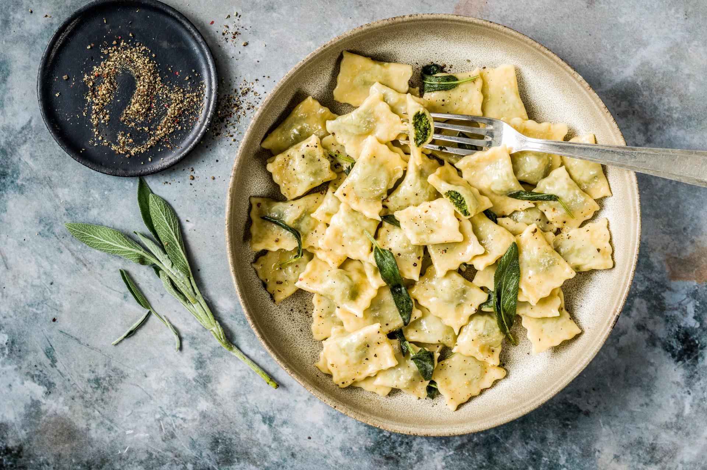
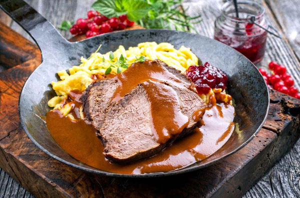

La Cuisine Piémontaise : Un Héritage de Saveurs et de Raffinement
La cuisine piémontaise est l’une des plus riches et raffinées d’Italie, influencée par son terroir et son histoire. Cette région bénéficie d’une gastronomie authentique, combinant produits du terroir, fromages savoureux, truffes d’exception et vins prestigieux.
Bagna Cauda
Une sauce chaude à base d’ail, d’anchois et d’huile d’olive, servie avec des légumes crus ou cuits.
Agnolotti del Plin
Petites ravioles farcies à la viande (veau, porc ou lapin), servies avec du beurre et de la sauge.
Brasato al Barolo
Un plat où la viande de bœuf mijote lentement dans du vin Barolo, accompagné d’herbes et d’épices.
Grâce à sa cuisine généreuse et son amour pour les produits de qualité, le Piémont s’impose comme une destination incontournable pour les gourmets.